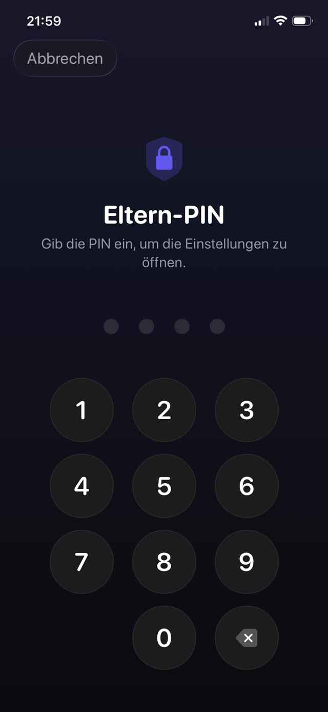

Hier ist zuerst die Einrichtung, dann die Türen, dann wie Sie sie schließen.


Der eingebaute Weg: Apples Bildschirmzeit
Auf dem iPhone des Kindes, oder von Ihrem eigenen Gerät aus, wenn das Handy in Ihrer Familienfreigabe ist:
- Einstellungen öffnen und auf Bildschirmzeit tippen.
- Auf Beschränkungen tippen und einschalten.
- Mit App-Limits Kategorien oder einzelne Apps begrenzen, und Auszeit für die Stunden, in denen nur läuft, was Sie erlauben.
- Einen Bildschirmzeit-Code setzen, der sich vom Entsperrcode des Handys unterscheidet, und kein Geburtsdatum verwenden.
- Unter Beschränkungen Änderungen am Code und an den Accounteinstellungen sperren.
Die Lücken, die Kinder tatsächlich finden
Keine davon erfordert technisches Können. Alle werden auf dem Schulhof weitergegeben:
- Löschen und neu installieren. Ein Limit, das an eine bestimmte App gebunden ist, lässt sich umgehen, indem man sie entfernt und erneut lädt, wenn Sie nicht auch das Installieren beschränken.
- Der Browser. Die TikTok- oder YouTube-App zu sperren bringt nichts, wenn Safari dieselbe Seite öffnen kann. Sperren Sie die Kategorie oder beschränken Sie zusätzlich die Webinhalte.
- Die Uhr verstellen. Datum und Uhrzeit zu verschieben kann Limits durcheinanderbringen, wenn Sie die Datums- und Zeiteinstellungen nicht sperren.
- Beim Tippen zusehen. Der Code wird öfter über die Schulter abgeschaut als erraten.
- "Mehr Zeit anfragen". Wenn Genehmigungen auf Ihrem Handy einen Tipp entfernt sind, genehmigen Sie sie nebenbei, und das Limit ist weg.
Das tiefere Problem mit Zeitlimits
Selbst eine perfekt abgedichtete Einrichtung hat einen Konstruktionsfehler: Wenn die Zeit um ist, hat sich nichts geändert, außer dass Ihr Kind jetzt gelangweilt und sauer auf Sie ist. Sperren erzeugt ein Vakuum. Was es füllt, ist entweder eine Verhandlung oder ein Umweg.
Deshalb sperrt die haltbarere Einrichtung nicht nur, sondern stellt etwas auf die andere Seite der Sperre. Die Apps sind nicht weg; sie liegen hinter einer Aufgabe, die sich lohnt.
Sperren mit einem Zweck
Guardian Reader nutzt darunter dasselbe System von Apples Bildschirmzeit, das Sperren wird also auf Betriebssystemebene durchgesetzt, nicht von einer Browser-Erweiterung oder einem Profil, das sich nebenbei löschen lässt. Der Unterschied liegt darin, was es entsperrt.
Statt einen Wecker auszusitzen, scannt Ihr Kind die Seiten eines Papierbuchs und liest sie am Stück laut vor. Die App prüft das Vorgelesene gegen den gescannten Text und gibt die Minuten frei, die Sie festgelegt haben. Wenn sie ablaufen, sperren sich die Apps von selbst wieder.
Die Einrichtung
- Guardian Reader auf dem iPhone des Kindes installieren und öffnen.
- Beim Nachfragen den Zugriff auf Bildschirmzeit erlauben; das ist Apples eigene Berechtigung.
- Die Apps oder Kategorien wählen, die gesperrt werden: Spiele, YouTube, TikTok, soziale Netzwerke, oder alle zusammen.
- Seiten pro Sitzung und verdiente Minuten festlegen.
- Eine Eltern-PIN anlegen. Sie ist getrennt vom Gerätecode und von Face ID, denn das auf diesem iPhone hinterlegte Gesicht gehört Ihrem Kind.
Warum die PIN nicht Face ID ist
Dieses Detail zählt mehr, als es klingt. Auf dem Handy eines Kindes gehört die Biometrie dem Kind, also entsperrt jede "Elternsperre", die mit Face ID aufgeht, auch für es. Guardian Reader nutzt bewusst nur eine PIN, die nur Sie kennen, mit einer Sperre nach wiederholten Fehlversuchen.
Lesen schaltet den Bildschirm frei.
Gratis · Kein Konto, kein Tracking
Guardian Reader fürs iPhone holen